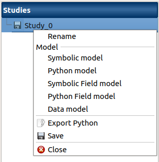
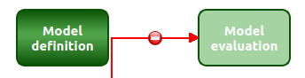
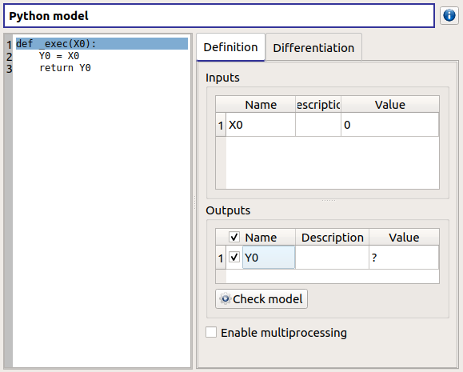
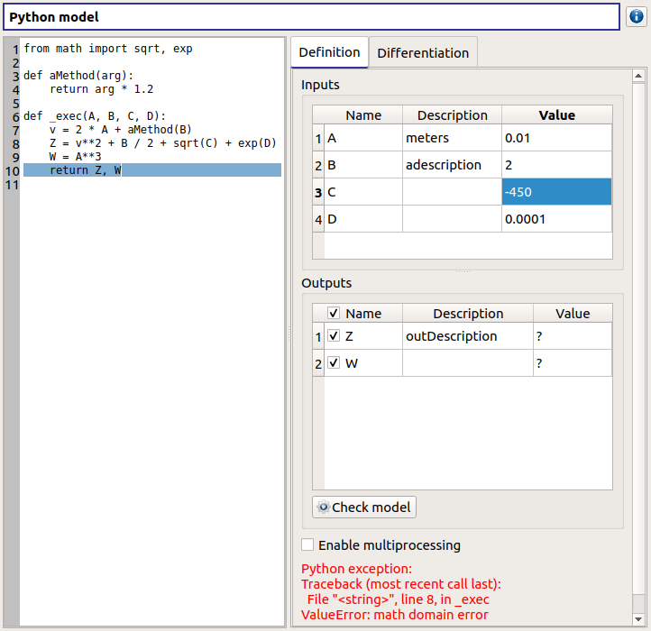
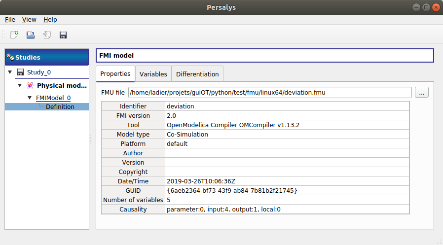

User manual - Define a physical model¶
This section introduces the models defined with a vectorial function.
- Several types of physical models are available:
Symbolic model: Physical model defined with analytical formulas
Python model: Physical model defined with a Python script
Coupling model: Physical model to wrap an external code using file-exchange
YACS model: Physical model defined with a YACS scheme (optional)
FMI model: Physical model defined with a FMU file (optional)
1- Creation¶
- There are several ways to create a new model:
Select an item in the context menu of the study item
Click on a button of the study window

The creation of a physical model adds a new element in the study tree, below the Physical models section.
- Different actions are available through the context menu of the model (by right click):
Rename: Rename the model
Define the model: Open a new window to define the model
Duplicate the model: Create a copy of the model in the study tree
Remove: Remove the model and all the analyses depending on it
Properties: Allows to specify the number of processes used by the model (only for Python/Coupling/FMI physical models)
The item is associated with a Study workflow window.

This diagram displays the possible actions an user can perform in real time. An action is active when its box is in dark green and when a previous one is valid. A box is disabled when its box is in light green, and the previous one is not valid. When the mouse pointer is hovered over a box, an information message appears at the bottom of the window in order to specify what sort of actions the box proposes. If the box is disabled the message indicates why the previous one is not valid.
On the screenshot above, the mouse points over the Probabilistic model definition box: here the action is Define stochastic input variables and the dependence (below the main window), but this action is available only if the user defines at least one input variable in the physical model. So, here the only option of the user is to complete the model.
2- Definition¶
- To define a physical model:
Select Define the model in the context menu of the model item
Click on the Model definition box of the model diagram

When the definition is required, a new item named Definition appears in the study tree.
- Its context menu proposes these actions:
Probabilistic model: Create stochastic input variables and dependence
Observations: Import observations of variables of the model
Design of experiments: Create a new design of experiments
Evaluation: Evaluate the model at a point
Screening: Perform a screening analysis
Optimization: Perform an optimization

The new item Definition is associated with a window in the main frame, whose title is the name of the chosen physical model. In this window, the user can specify the model variables (Definition tab) and the finite difference step of each variable (Differentiation tab).
2-1 Symbolic model: define a physical model with analytical formulas¶

- Define variables in the Definition tab:
- the Inputs section allows one to:
Add/remove inputs (Add/Remove button)
Rename variables (default: (X0, X1, …), expected: string (alphanumeric characters only)) (Name column)
Describe variables (default: empty string, expected: string (no restriction on the label format: floating point, integer, string, etc…)) (Description column)
Assign a value to the inputs (default: 0, expected: floating points or integers) (Value column)
- the Outputs section allows one to:
Add/remove outputs (Add/Remove button)
Enable/disable one or several variables, by checking off the corresponding line (default: all output lines are checked off). To perform the analyses, at least one output must be selected.
Rename variables (default: (Y0, Y1, …), expected: string (alphanumeric characters only)) (Name column)
Describe variables (default: empty string, expected: string (no restriction on the label format: floating point, integer, string, etc…)) (Description column)
Define the mathematical relationships between the input and output variables (Formula column). Note that the language used here differs from Python (see corresponding syntax for operators, mathematical functions and constants below).
Launch the computation of the selected output values based on inputs and formula (Check model button). It shall be used to test the physical model. To save the output values, the user should use a Model evaluation.
Available operators¶
= (assignment)
<= (less or equal)
>= (greater or equal)
!= (not equal)
== (equal)
> (greater than)
< (less than)
+ (addition)
- (subtraction)
* (multiplication)
/ (division)
^ (raise x to the power of y)
Available functions¶
sin
cos
tan
asin
acos
atan
sinh
cosh
tanh
asinh
acosh
atanh
log2
log10
log
ln
lngamma
gamma
exp
erf
erfc
sqrt
cbrt
besselJ0
besselJ1
besselY0
besselY1
sign
rint
abs
min
max
avg
sum
floor
ceil
trunc
round
Available constants¶
e_
pi_
2-2 Python model: define a physical model with a Python editor¶
- The model definition window contains:
- the Python editor allows one to define the model with the function _exec which:
takes floating point arguments (detected as the inputs of the model) (default: X0)
returns a float or a sequence of floats (detected as the outputs of the model) (default: Y0 = X0)
can use other statements defined in the Python editor
- the Inputs section allows one to:
List the inputs detected from the function _exec
Describe variables (default: empty string, expected: string (no restriction on the label format: floating point, integer, string, etc…)) (Description column)
Assign a value to the inputs (default: 0, expected: floating points or integers) (Value column)
- the Outputs section allows one to:
List the outputs detected from the function _exec
Enable/disable one or several variables, by checking off the corresponding line (default: all output lines are checked off). To perform the analyses, at least one output must be selected.
Describe variables (default: empty string, expected: string (no restriction on the label format: floating point, integer, string, etc…)) (Description column)
Require the parallelization of the computations (Enable multiprocessing button)
Launch the computation of the selected output values based on inputs, and the Python function (Check model button). It shall be used to test the physical model. To save the output values, the user should use a Model evaluation.
Here is an example of a more complex model definition:

Here is an example of an error message transmission, when we tried to compute sqrt(C=-450):
2-3 Coupling model: define a physical model to wrap an external code using file-exchange¶
2-3-1 Definition¶
A physical model can be defined to wrap an external code. I/O can be cached in dedicated files. Remember to clear it when significant changes are made on the model. Working directory (local temp area by default) can be explicitly set. The checkbox allows the user to keep the working directory once the model has run. The Check model button runs the model on the defined input values. It shall be used to test the physical model. To save the output values, the user should use the Model evaluation.
A coupling model is divided into steps (one per tab), each with its own parameters. Output from a given step can be used as input in the next.
Step definition is divided into several categories:
Command: used to define the command calling the external code. This can be empty if one decides to set a pre-processing. The Advanced parameters group box can be used to set:
I/O encoding (utf-8/latin-1)
command timeout (-1 for no time out)
command-specific environment using the table:
add/remove environment variables using the dedicated buttons
the first column corresponds to the environment variables names
the second column corresponds to its value
this is useful for example to set a dedicated python environment containing specific modules not in included in persalys
Inputs: used to locate the template file that will be used to generate inputs files for the command. Each input variable is associated to a token that will tell the coupling model code where to find it in the input file. Template file correctness can be evaluated using the “check input button”. Template and generated input files will be displayed side-by-side for visual inspection and validation. If an input is defined as output in one of the previous step, a question mark will be displayed as its default value. When checking the template, it will default to zero in the generated input file.
Resources: used to locate the files required by the command (executable, configuration files, etc..)

Outputs: used to specify the output file name and specify where to find the output variables in it. Similarly to the Inputs section, output variables are associated to a token. In addition, numerical format can be specified as in https://pyformat.info/ set of “new rules”. Generated output files can be inspected using the “check output button”. When clicked it will ask the user to choose a generated output file and will try to retrieve the output variables values.
Additional processing (Optional): A python editor (similar to the one in the PythonModel) can be used to set a pre/post processing function. Variables form preceding steps and/or intermediate/output variables can be defined and manipulated here.

2-3-1 Ansys wizard¶
A wizard is available to pre-populate coupling step information based on data contained in an Ansys workbench project. It consists in two steps:
First, you need to specify a workbench project file (.wbpj). You can also point to a specific ansys solver if the default one does not suit your needs. Once the project file is read, variables from the project are displayed in the table. You can select which variable come into play in the coupling step.

Likewise, in the second step, you can select which system present in your project needs updating. Be careful to select all the systems that are concerned by the variables you selected in the previous step.

Once completed, the wizard will generate a template file. Outputs returned by the ansys solver (in the form of a csv file) are processed in the extra processing tab where some python code is automatically generated to parse coupling step output values.
2-4 YACS model: define a physical model with an XML file¶
A physical model can be defined by loading an XML file, previously generated for example with Salome, which contains:
Definitions for the input and output variables;
Computation parameters;
Actions to be performed to evaluate the model (for instance, a call to Code_Aster solver)
The Check model button computes the output values based on inputs and the YACS scheme. It shall be used to test the physical model. To save the output values, the user should use the Model evaluation.
2-5 FMI model: define a physical model from an FMU file¶
A physical model can be defined by loading a FMU file, previously generated by OpenModelica for example.
The Properties tab allows one to select the FMU file and to display its properties.
The Variables tab describes the model variables. The main array shows the list of the variables. While the variability and causality are read-only FMI attributes, one may want to change whether how variables are used regarding the physical model: disabled, input or output in the I/O column under the following constraints:
A variable of causality Input cannot be disabled
A variable of causality Output or Local cannot be used as input
A variable of causality Input or Parameter cannot be used as output

By default, all the variables appear in the array and some filters allow one to modify the currently listed variables.
The Check model button runs the model once. The output values are displayed in the Value column.
2-6 Differentiation tab¶

The Differentiation tab enables the user to define the finite difference step of each input variable. By default each step is equal to 1e-7. These steps are used to set the gradient of the model function with the first order non-centered finite difference scheme and its hessian with the second order centered finite difference scheme.
First order non-centered finite difference scheme:
Second order centered finite difference scheme: